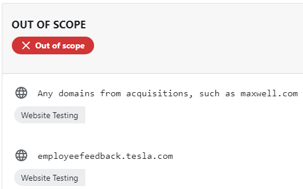

Identifying A Target
Before you begin the most obvious thing is to identify who or what you will target.
For the course we will use Bug Crowd. It is a website that allows you to hack a list of their programs and get a reward if you find any bugs or security flaws.
www.bugcrowd.com/programs
Search for Tesla in the seach box.
Read the program details o make sure you can stay in scope.
It will tell you which sites to avoid and which sites you can pen-test.

Avoid any website listed as out of scope

These websites are available to test and you will be able to see the type of rewards to will get.